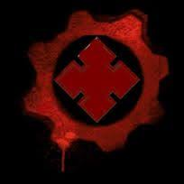

¿QUIENES SON LOS LOCUST?
La Horda Locust, a menudo llamados Larvas por los seranos, fue una raza de humanos mutados que establecieron su civilización en las regiones subterráneas de Sera, conocida como la Hondonada. La Horda Locust fue creada y colocada en la Hondonada durante las Guerras del Péndulo. Su creación fue a partir de un proyecto de investigación dirigido por el Dr. Niles Samson, utilizando experimentación genética en hijos de mineros envenenados con Imulsión en el Centro de Investigación Nueva Esperanza, con el fin de encontrar una cura para la Neumonía Óxida. Los niños fueron empalmados con el ADN de las criaturas indígenas de la Hondonada, creando a los antepasados de los Locust, conocidos como los Sires. El eventual cierre de la instalación y la reubicación de Niles Samson, con un grupo de científicos y sujetos, a una instalación secreta dentro del Monte Kadar, llevó a la creación de la Horda Locust mediante la combinación de las células madre embrionarias de Myrrah, una niña nacida con inmunidad a la Imulsión, con ADN de los Sires. Myrrah sentía simpatía por los Locust sobre los humanos y llevó a los Locust, como su Reina, a masacrar a todos los científicos y escapar de las instalaciones. La Reina Myrrah llevó a su gente a las profundidades de las cavernas del monte Kadar, donde comenzaron a construir su propia civilización: Nexus. Hacia el año 7 A.E., los Locust y las criaturas de la Hondonada se infectaron con Lambentismo, en el que el parásito de la Imulsión poseyó al huésped y lo obligó a infectar o matar a todos los organismos no infectados. Esto llevó a una epidemia en la Hondonada Interior conocida como la Guerra Lambent. En el 5 A.E., la Reina Myrrah buscó la ayuda del científico humano, el profesor Adam Fenix, para resolver el Lambentismo. Sin embargo, todas las soluciones posibles fallaron o dañarían también a los Locust debido a que sus antepasados estaban llenos de imulsión en su genética. Con los Locust perdiendo más de su hogar ante los Lambent, y los Locust muriendo o infectando y uniéndose a los Lambent, la Reina Myrrah ordenó a su gente emerger en la superficie de Sera y exterminar a cada hombre, mujer y niño para que pudieran colonizar la superficie y abandonar la Hondonada para escapar del Lambent. La Horda Locust emergió poco después del final de las Guerras del Péndulo y libró una guerra de diecisiete años que casi tuvo éxito en erradicar a toda la raza humana. Todos los intentos conocidos de los humanos de negociar con la Horda Locust terminaron en violencia, aunque el profesor Adam Fenix creía que podía terminar la guerra pacíficamente. Para el 14 D.E., toda la Hondonada y Nexus fueron destruidos por la Bomba de Masa Ligera e inundados por el hundimiento de Jacinto. El agua de mar en la Hondonada hizo que la Imulsión subiera a la superficie y provocara la Pandemia Lambent. Para el 17 D.E., Adam Fenix perfeccionó el Arma Desmanteladora de Imulsión, que eliminó la Imulsión, vaporizó el Lambent y cristalizó a todos los Locust en un caparazón de Imulsión similar a un capullo. Veinticinco años después, la Horda Locust se convirtieron en Scions, que luego resurgió en 42 D.E., resurgiendo como el Enjambre para terminar lo que comenzaron los Locust.
HISTORIA DE LOS LOCUST